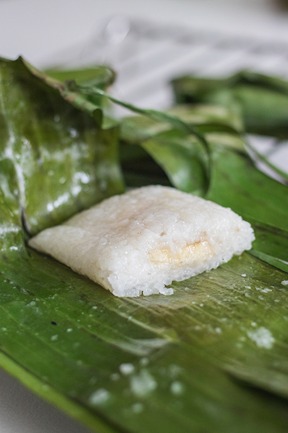

Home
Khao Tom Mud

Sweet Coconut Sticky Rice Desert
This is a traditional Thai/Lao desert that is made out of coconut soaked
sticky rice wrapped around a sweet banana. Often times, this desert will
be made with black beans as well, giving it another layer of flavor.
This was a favorite desert of mine when I was a kid. Nothing brings back memories
more than the smells and taste of a desert you used to have all the time!
Ingredients
- Glutinous rice
- Black beans
- Salt
- Coconut milk
- Bananas
Steps
- Soak rice and beans in water for 3 hours (in seperate bowls)
- Sun dry banana leaves or heat them over the stove
- Cook drained glutinous rice in a wok or pot over medium heat with salt, white suger, and coconut milk
- Slice banana in 2 or 3 pieces
- Use scissors to cut bananas leaves in circles. You will need one large
circle, and one small circle for each khao tom
- Place small circle inside of the large circle. Spoon filling onto small
circle, add banana slice, and then a spoon filling on top
- Fold your banana leaf around the filling making sure it is centered
- Steam over medium heat for 30 minutes. Enjoy!